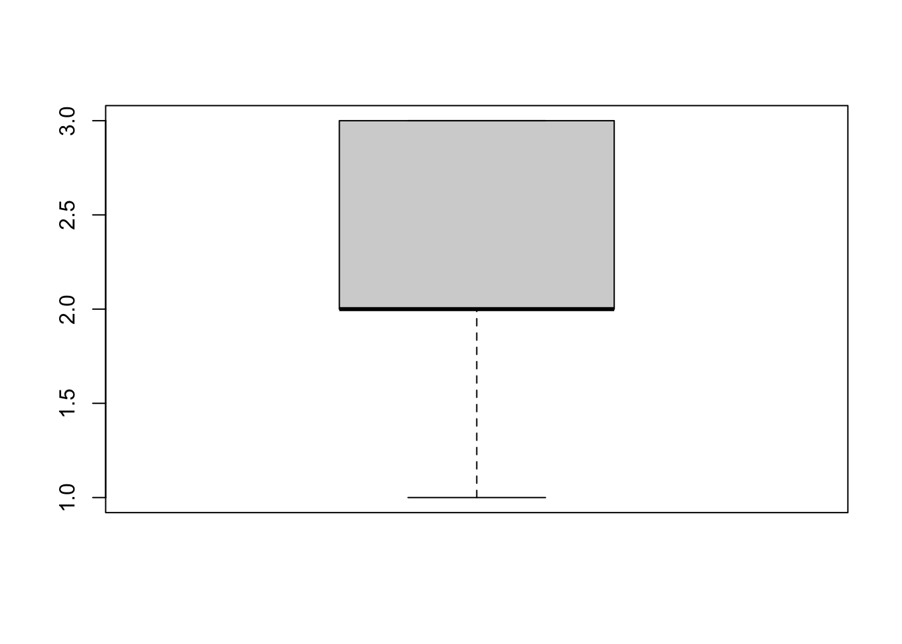
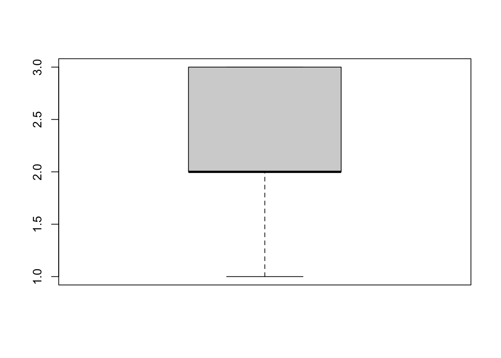
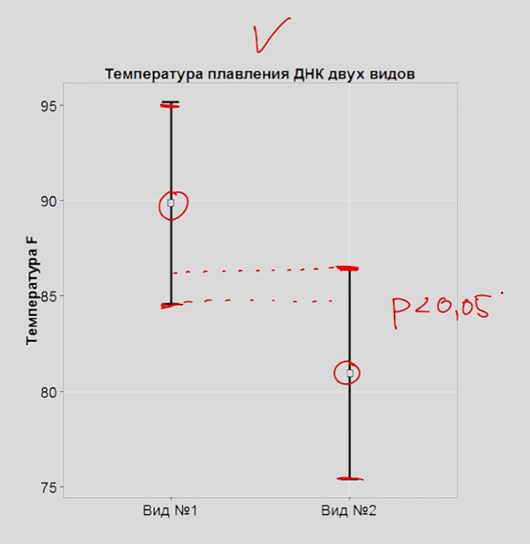
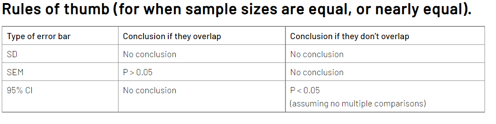
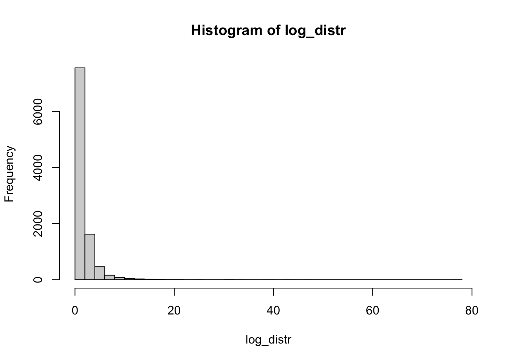
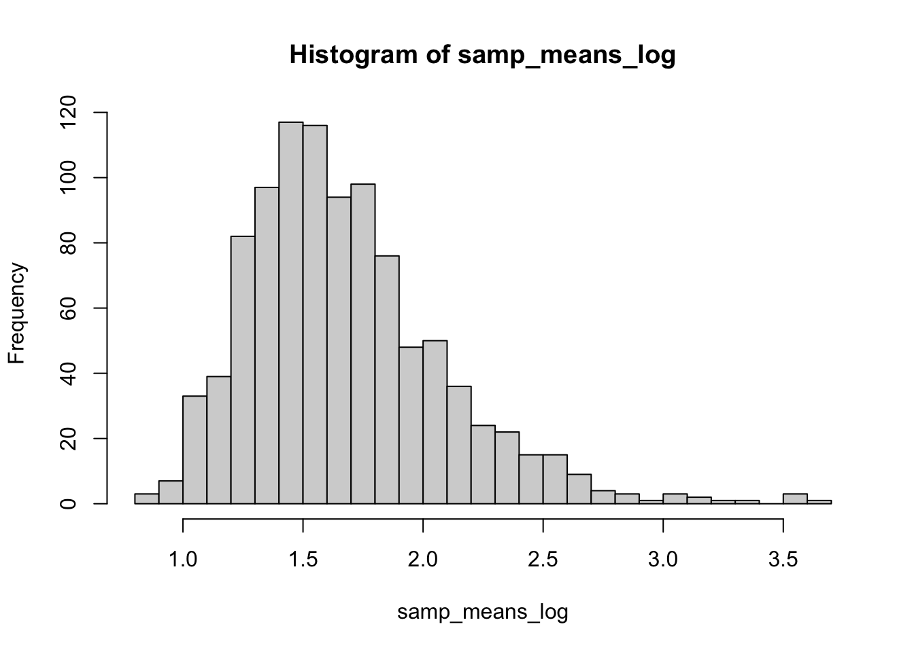

boxplot(c(1, 2, 2, 2, 2, 3, 3, 3))
По итогам многочисленных дискуссий в чатах по статистике и биоинформатике (BioStat <- R | Чат по статистике и R, BIOINF | Education & Career), я решила написать обзор на курс “Основы статистики” на платформе stepik. Давайте разберем его достоинства и недостатки, а также есть ли смысл его смотреть сейчас.
Немного контекста: курс был опубликован в начале 2015го года, и был одним из первых бесплатных русскоязычных курсов по статистике (а может и самый первый). Конечно, были и есть книги, но не было лекций в интерактивном формате.
К тому же не все переводы книг по статистике хороши, например, перевод книги Гланца “Медико-биологическая статистика” оставляет желать лучшего. Книга “Статистика и котики”, которая хороша для старта в статистике, была опубликована позже, в 2016. Это я к тому, что такого многообразия материалов по статистике, как появилось в последние ~5 лет еще не было, и на тот момент вводный курс по основам статистики был очень актуален для сообщества.
Я сама посмотрела курс “Основы статистики” в 2017 году, после довольно слабого курса по статистике в университете, и для меня курс был полезен для старта, после чего продолжила изучать статистику преимущественно по книгам (а сейчас преподаю сама). В тот момент курс показался достойным, мне понравился простой язык изложения, расчет формул на игрушечных примерах, а также удобный интерактивный формат заданий и их проверки на степике.
Курс состоит из трех блоков:
В общем такой джентльменский набор тем для старта.
Разберем подробно каждую часть, выделяя что понравилось, а также указывая на неточности и ошибки. Платформа степик не позволяет делать ссылки с таймкодами, поэтому буду прикреплять ссылки на видео и подписывать время в тексте.
Общее впечатление: большая часть вещей объяснена нормально, неплохой блок про статистический вывод, объяснено, чем p-value является и не является, но при этом проскальзывают неосторожные формулировки, а иногда и ошибки. Основные разобраны ниже, а также отдельно вынесены терминологические неточности (в основном что касается принять нулевую гипотезу и тп).
По всему разделу описательных статистик перескакивает мысль с дисперсии генеральной совокупности на дисперсию выборки, в знаменателе формулы то \(n\), то \(n-1\), плюс не хватило объяснения, почему используются греческие или латинские буквы для обозначения дисперсии или среднего, это сбивает с толку слушателей.
Анатолий Карпов объясняет (на 3.30), что \(n-1\) в знаменателе формулы дисперсии выборки связано со степенями свободы, но это не совсем так. Такое же объяснение приводится и для коэффициента корреляции, хотя в расчете коэффициента корреляции вообще степеней свободы \(n-2\).
Здесь важно прояснить две вещи. Первое: при делении на \(n\) у нас систематически занижается дисперсия выборки относительно дисперсии генеральной совокупности, и деление на \(n-1\) позволяет получить несмещенную оценку дисперсии (здесь или здесь можно посмотреть, как это происходит). Второе: при растущем объеме выборки обе формулы дают значение, которое приближается к дисперсии генеральной совокупности. То есть в курсе объяснение через степени свободы не совсем ошибка, но немного уводит в сторону.
Вот начиная с этого сообщения обсудили, что в принципе это объяснение тоже имеет смысл
Кроме этого, стандартное отклонение называется в лекциях и стандартным, и среднеквадратичным отклонением. Понятно, что это одно и то же, но это не было проговорено явно, в результате слушатели курса в растерянности. Исторически в русскоязычной литературе использовался вариант “среднеквадратичное отклонение”, но сейчас чаще встречается вариант “стандартное отклонение”, мне кажется это более правильно, так как прямой перевод standard deviation.
Вот тут сказано, что между первым и третьим квартилем в боксплоте находится ровно 50% наблюдений. В принципе это часто так, но не обязательно, например, это будет неверно в случае, если в данных есть повторяющиеся значения.
boxplot(c(1, 2, 2, 2, 2, 3, 3, 3))
Здесь в “ящике” бокса находится 7/8 значений, то есть 87.5%. Можно придумать и совсем экстремальный случай, когда в ящике бокса находятся все наблюдения и “усов” нет совсем. Конечно, это редко когда встречается, но в любом случае проявление неаккуратности формулировки, хотя и не слишком существенное.
А вот следующий пример будет гораздо хуже ⬇️
Вот тут было что-то совсем странное с интерпретацией доверительных интервалов (с 1.05).
Дословно текст:
Потому что если у нас среднее номер 2 не попадает в доверительный интервал для среднего номер 1, и наоборот, среднее номер 1 не попадает в доверительный интервал для среднего номер 2, то такие различия у нас будут достигать уровня статистической значимости.

Такая интерпретация перекрывания доверительных интервалов совсем неверная.
Здесь я писала про доверительные интервалы и пределы погрешностей. В двух словах: отсутствие перекрывания 95% доверительных интервалов говорит о статистически значимых различиях (p < 0.05), но речь идет именно о перекрывании усов, а вовсе не о том, что доверительный интервал одной выборки не перекрывается с выборочным средним второй.
Перекрывание усов со средним не интерпретируется в терминах статистической значимости. На картинке выше доверительные интервалы перекрываются, и это не говорит о том, что различий нет, поскольку только отсутствие перекрывания говорит о статистически значимых различиях:

Наличие перекрывания не говорит о том, что различий нет. Еще стоит отметить, что в принципе делать выводы о различиях средних на основании перекрывания/не перекрывания доверительных интервалов плохая практика.
Считаю это очень серьезной неточностью и даже ошибкой курса, учитывая, что в целом доверительный интервал как явление дает простор для мисинтерпретации, так еще и в курсе приведено заведомо неверное объяснение.
Дмитрий Пензар достаточно подробно про это расписал, главное замечание в том, что в формулировке Карпова ЦПТ становится практически бесполезной (ссылка на лекцию).
Предположим исследуемый нами признак имеет нормальное распределение в генеральной совокупности с некоторым средним и стандартным отклонением, и мы многократно извлекаем выборки равные n по объему, и в каждой выборке рассчитываем среднее значение, после чего строим распределение этих выборочных средних. Так вот, такое распределение будет являться нормальным со средним, совпадающим с этим показателем генеральной совокупности. И, что самое интересное, со стандартным отклонением, которое называется стандартная ошибка среднего, se равным sigma/корень(n).
Не хватило объяснения основной сути ЦПТ.
Основная суть ЦПТ в том, что какой бы ни была форма распределения в генеральной совокупности, выборочное распределение средних будет стремиться к нормальному. Это применимо для признака, который обладает конечными математическим ожиданием и дисперсией.
Иллюстрация на примере логнормального распределения:
log_distr <- rlnorm(10000) # создаем "генеральную совокупность"
hist(log_distr, breaks = 30) # строим гистограмму
Извлекаем тысячу раз выборки размером 30, считаем среднее этих выборок, построим распределение.
samp_means_log <- replicate(1000, mean(sample(log_distr, 30)))
hist(samp_means_log, breaks = 30)
Распределение выборочных средних из логнормального распределения получилось очень похожим на нормальное распределение. Это происходит благодаря центральной предельной теореме.
Вот тут можно посмотреть еще: Шайни апп для центральной предельной теоремы, особенно эффектно выглядит на примере равномерного распределения.
Общее впечатление: самая слабая часть курса, наибольшее количество ошибок сосредоточено именно здесь. При этом лайк за объяснение однофакторного дисперсионного анализа и разбор проблематики множественного тестирования.
Здесь некорректно назван t-тест почему-то парным t-тестом. Видимо имелся ввиду двухвыборочный t-тест. Напоминаю, что парный или зависимый t-тест применяется к зависимым выборкам и формула расчета его другая.
По всему курсу t-критерий Стьюдента называется критерий t-Стьюдента.
Странная постановка нулевой и альтернативной гипотезы (0.20):
нулевая гипотеза, будет предполагать, что на самом деле в генеральной совокупности никакого различия между этими средними значениями нет, тогда как альтернативная гипотеза <…> будет говорить, что на самом деле эти средние в генеральной совокупности не равны.
Более правильно будет сказать, что нулевая гипотеза — о том, что две генеральные совокупности (из которых взяты соответствующие выборки) имеют одинаковое среднее. Соответственно альтернативная — о том, что средние в генеральной совокупности не равны.
Далее, не было сказано ничего про тест Велча (тест Стьюдента с поправкой Велча), зато сказано, что нужно обязательно равенство дисперсий при сравнении двух групп t-тестом. Для теста Стьюдента без поправки Велча это действительно так, но в целом более надежно с точки зрения ошибки первого рода использовать тест Стьюдента с поправкой Велча.
Я сравнивала тест Стьюдента и тест Велча, вот выдержка из материала:
В большинстве случаев оба теста контролируют ошибку первого рода и мощность на заданном уровне. Однако у теста Стьюдента есть проблема с ошибкой первого рода (ложноположительные результаты) в ситуации с неравными дисперсиями и разным размером выборок.
| тест Велча | тест Стьюдента | |
|---|---|---|
| Отличий нет, равные дисперсии, равные выборки | ✅ | ✅ |
| Отличий нет, разные дисперсии, равные выборки | ✅ | ✅ |
| Отличий нет, разные дисперсии, разные выборки, меньшая выборка с большей дисперсией | ✅ | ❌ |
| Отличий нет, разные дисперсии, разные выборки, бОльшая выборка с большей дисперсией | ✅ | ✅ |
| Отличия есть, равные дисперсии, равные выборки | ✅ | ✅ |
| Отличия есть, разные дисперсии, равные выборки | ✅ | ✅ |
| Отличия есть, разные дисперсии, разные выборки, меньшая выборка с большей дисперсией | 🟡 | ✅ |
| Отличия есть, разные дисперсии, разные выборки, бОльшая выборка с большей дисперсией | ✅ | 🟡 |
Можно было хотя бы упомянуть про существование теста Велча, учитывая что в большинстве статистических программ считается именно он.
Также сказано про нормальность распределения как обязательное требование для t-теста, но только в случае, если значений в выборке меньше 30. Почитать, почему это не так, можно по ссылке. В тексте этой статьи есть неточности, но общий посыл передан верно, ждем Матвея Славенко с подробным разбором этого статистического мифа.
Очень мимоходом сказано про тест Манна-Уитни, не сказано ничего про формулировку нулевой гипотезы, кажется что мы сравниваем средние, только в рангах, а это не совсем так.
Я думаю не помешало бы уделить больше внимания тесту Манна-Уитни, так как тест очень популярен в научном сообществе, для случаев, когда нарушается требование к нормальности распределения.
Большая статья про тест Манна-Уитни на хабре от Сергея Матросова и аналитиков X5 Tech.
Не хватило рекомендаций, что делать с выбросами помимо использования непараметрических методов, так как не всегда непараметрика это единственный возможный и верный вариант.
Здесь все очень даже неплохо, мне понравился расчет F-значений в дисперсионном анализе вручную и объяснение внутригрупповой и межгрупповой суммы квадратов.
Но все-таки укажу на кое-какие огрехи: тут указано требование к нормальности данных и гомогенности дисперсий, но если наблюдений больше 50, то ANOVA устойчива к нарушению обоих предположений. Это так, но я бы уточнила, что нам важнее нормальность распределения остатков, а не исходных данных. В остальном да, при достаточном размере выборки ANOVA устойчива к нарушению нормальности, а при равенстве объемов выборок в группах к гетерогенности дисперсий.
Про многофакторный дисперсионный анализ рассказано поверхностно, но без ошибок, понятно, что в курсе по основам статистики не изложить все, особенно по теме дисперсионного анализа. Возможно, стоило обратить внимание на то, что бывают разные способы расчета сумм квадратов в двухфакторном дисперсионном анализе, и при разных размерах выборок (= несбалансированный дизайн) это может повлиять на выводы (вот тут можно посмотреть, основная проблема изложена).
Статья на stats.stackexchange с подробным разбором разных тип сумм квадратов и их отличием
Общая идея проиллюстрирована очень хорошо, и мне понравилось, что были использованы симуляции сравнений групп, а не просто формула FWER.
Но не хватило акцентов, какой метод в каком случае лучше использовать.
FWER — family-wise error rate, групповая вероятность ошибки I рода.
Формула расчета FWER для независимых тестов
\[ FWER = 1 - (1-\alpha)^k, где \]
k - количество тестов, \(\alpha\) - уровень значимости.
При сравнении групп тесты зависимые, и по формуле мы можем оценить только верхнюю границу, максимально возможное значение FWER.
Для дальнейшего углубления в конкретику, какую поправку использовать лучше, можно ознакомиться с моим постом с детальным разбором поправок и лекцией Матвея Славенко в литклубе биостатистики.
Общее впечатление: часть недостаточно подробная, хотелось бы увидеть больше деталей и материалов для дальнейшего изучения. Но серьезных ошибок не было, общая суть методов передана верно.
Здесь в объяснении преимуществ корреляции Спирмена говорится, что можно нарушить линейность, это так, но при этом важно, чтобы соблюдалась монотонность связи, на это не хватает акцента.
Не хватило методов, что можно сделать с выбросами помимо применения непараметрических тестов. В определенных ситуациях можно удалить выбросы, если они физически невозможны, также можно сделать различные преобразования, например логарифмирование. Но нужно учитывать, что может измениться интерпретация преобразованных данных.
Здесь сказано про опасность экстраполяции, но при этом предсказанное значение лежит за пределами диапазона значений независимых переменных, что уже является экстраполяцией и не совсем корректно.
Опечатка на слайде и в речи (1.15): в требованиях к множественной линейной регрессии указана гетероскедастичность вместо гомоскедастичности.
Про проблему мультиколлинеарности (3.00) маловато конкретики и объяснения причин, почему мультиколлинеарность плохо.
В теме множественной регрессии не хватило про VIF для оценки мультиколлинеарности, про информационные критерии AIC, BIC и методы отбора лучшей модели.
На тему регрессии рекомендую курс лекций Марины Варфоломеевой и Вадима Хайтова.
Справедливости ради, в третьей части курса (Основы статистики. Часть 3) это было разобрано более подробно.
Сюда относятся многочисленные “принять альтернативную гипотезу”, “статистически достоверно” вместо статистически значимо, соберем их в одном месте:
В ответах к заданию “принимаем нулевую гипотезу”
“Принимаем различия статистически достоверными” 1.26 1.45 3.24 5.04. Заметьте, тут в рамках одного видео такая формулировка встречается 4 раза, что нельзя списать на то, что автор просто оговорился.
На этом степе в задании “различия считаются статистически достоверными”.
В формулировке задания “статистически достоверными”.
“различиям между группами признавались статистически достоверными” в тексте задания.
В алгоритме статистического вывода, мы не принимаем нулевую гипотезу, а можешь лишь отклонить нулевую гипотезу или не отклонить ее (можно принять альтернативную гипотезу, но нельзя принять нулевую гипотезу).
Некорректно говорить “достоверность” вместо статистической значимости, потому что в математике достоверное событие — то, которое происходит со 100% вероятностью. Про термин “достоверность” почитать можно дискуссию в чате, начиная с этого сообщения, и поиском по чату можно найти достаточно аргументации, почему это нельзя использовать как замену статистической значимости.
И еще статья на эту тему: «Достоверность» или «Статистическая значимость» 12 лет спустя, Зорин Никита Александрович.
Как уже отмечала выше, курс был актуален в свое время. В настоящий момент смотреть курс “Основы статистики” скорее не рекомендую, ниже предлагаю список хороших материалов:
Для удобства попробовала разбить на разные уровни
Junior:
Middle:
Senior:
При этом всем хочу выразить Анатолию Карпову респект за популяризацию R в сообществе (по крайней мере раньше), и большую благодарность за бесплатные программы: симулятор SQL, курс по визуализации данных.
Матвею Славенко за уточнение сложных моментов и помощь с корректностью формулировок, Яне, Жене и Юле за конструктивные статистические дискуссии и рекомендации по тексту, Сергею Матросову за дополнительную мотивацию все-таки дописать пост и Дмитрию Пензару за исходное развитие дискуссии и пример с ЦПТ.
Обсудить можно в телеграм-канале Статистика и R в науке и аналитике, в комментариях к посту или здесь, авторизовавшись через GitHub.